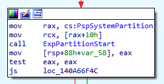

Work Items & System Worker Threads - ‘Practical Reverse Engineering’ solutions - Part 3
Introduction
This post is about ‘Work Items’ , the third part of my ‘Practical Reverse Engineering’ solutions series and a natural continuation to the previous one about kernel system threads. Luckily, thanks to Alex Ionescu, while researching the topic, I had the chance to get a pre-proof copy of Windows Internals 7th edition, Part 2 ahead of time so I could check my initial findings against the ones from the authors of the book. Also, shout-out to Satoshi Tanda for shedding some light along the path.
As we saw in the previous post, there are times where we want to run a large chunk of code on a different thread rather than the current one, and this it what dedicated system threads are for. On the other hand, if we need to run a smaller piece of code, it’s better to delegate execution to one of the kernel’s thread pool running within the system process, instead of having extra scheduling and memory overhead associated with additional threads in the system Work items are just asynchronous mechanisms that are queued into one of the system thread pool and, due to their lightweight nature, they are becoming more and more adopted instead of ad-hoc system threads.
Work items are employed when a driver wants do delay execution by lowering the IRQL level on a given processor and defer tasks to be executed at PASSIVE_LEVEL instead, which is the IRQL level which work items are designed to operate.
As an example, writing a file on the disk is something that is not allowed at DISPATCH_LEVEL, so a Deferred Procedure Call (DPC) could delegate work to a work item which will execute the operation at PASSIVE_LEVEL.
Once the work items are enqueued by the driver, a system worker thread will eventually retrieve the item from the queue and run the callback routine.
Before jumping into the exercise’s requirement and solution, let’s first get an overview of their structures and internals.
Structures overview
The main structure that compose a work item it’s aptly named IO_WORKITEM: starting from Windows 10 1507 Threshold 1, a new member calledWorkOnBehalfThread (formerly known as WorkingOnBehalfClient) has been added. It references an ETHREAD structure and it’s used whenever a routine is going to be executed on behalf of another thread.
0: kd> dt nt!_IO_WORKITEM -r 1
+0x000 WorkItem : _WORK_QUEUE_ITEM
+0x000 List : _LIST_ENTRY
+0x000 Flink : ????
+0x008 Blink : ????
+0x010 WorkerRoutine : ????
+0x018 Parameter : ????
+0x020 Routine : Ptr64 void
+0x028 IoObject : Ptr64 Void
+0x030 Context : Ptr64 Void
+0x038 WorkOnBehalfThread : Ptr64 _ETHREAD
+0x040 Type : Uint4B
+0x044 ActivityId : _GUID
As we can see from above breakdown, the WorkItem field is just a list entry containing the actual routine and parameter as depicted here:
struct _WORK_QUEUE_ITEM
{
struct _LIST_ENTRY List; //0x0
VOID (*WorkerRoutine)(VOID* arg1); //0x10
VOID* Parameter; //0x18
};
The parameters that are present in this structure are the actual work routine + arguments that are going to be enqueued and ultimately executed.
Enqueuing work items
A kernel object that wants to place system worker thread’s services can do so by calling either the functions ExQueueWorkItem or, to be used by device drivers only, IoQueueWorkItem.
Both of these function places the work item in dedicated queues where system workers threads are waiting to pick them up.
On an historical note, the original NT work item had only two priority levels: DelayedWorkQueue and the CriticalWorkQueue :)
Whereas, on Windows 8 there were four different queue types:
typedef enum _WORK_QUEUE_TYPE {
CriticalWorkQueue = 0,
DelayedWorkQueue = 1,
HyperCriticalWorkQueue = 2,
MaximumWorkQueue = 3
} WORK_QUEUE_TYPE;
And their granularity has increased even more on modern Windows 10:
typedef enum _WORK_QUEUE_TYPE {
CriticalWorkQueue,
DelayedWorkQueue,
HyperCriticalWorkQueue,
NormalWorkQueue,
BackgroundWorkQueue,
RealTimeWorkQueue,
SuperCriticalWorkQueue,
MaximumWorkQueue,
CustomPriorityWorkQueue
} WORK_QUEUE_TYPE;
Regarding increasing number of priority classes, the Windows Internal Part2 book come in handy:
Because the naming of all of these worker queues started becoming confusing, recent versions of Windows introduced custom priority worker threads, which are now recommended for all driver developers, and which allow the driver to pass-in their own priority level.
Back to analyzing work items structures, if we break on nt!IoQueueWorkItem and perform a live debug of the above structure through our PoC driver (more on that later), we can see how the _WORK_QUEUE_ITEM parameters have been filled.
Breakpoint 0 hit
nt!IoQueueWorkItem:
2: kd> dt _IO_WORKITEM @rcx
nt!_IO_WORKITEM
+0x000 WorkItem : _WORK_QUEUE_ITEM
+0x020 Routine : (null)
+0x028 IoObject : 0xffffb58f`2e15e9a0 Void
+0x030 Context : (null)
+0x038 WorkOnBehalfThread : (null)
+0x040 Type : 1
+0x044 ActivityId : _GUID {00000000-0000-0000-0000-000000000000}
2: kd> dx -id 0,0,ffffb58f2c93d080 -r1 (*((ntkrnlmp!_WORK_QUEUE_ITEM *)0xffffb58f2f8ec760))
(*((ntkrnlmp!_WORK_QUEUE_ITEM *)0xffffb58f2f8ec760)) [Type: _WORK_QUEUE_ITEM]
[+0x000] List [Type: _LIST_ENTRY]
[+0x010] WorkerRoutine : 0xfffff8073bf5a300 [Type: void (__cdecl*)(void *)]
[+0x018] Parameter : 0xffffb58f2f8ec760 [Type: void *]
We can verify that the IoObject is pointing to our device object from our PoC kernel driver that is named workitem:
2: kd> !object ffffb58f`2e15e9a0
Object: ffffb58f2e15e9a0 Type: (ffffb58f27cf2900) Device
ObjectHeader: ffffb58f2e15e970 (new version)
HandleCount: 0 PointerCount: 2
Directory Object: ffffa2076926e650 Name: workitem
This is expected as we have been using IoQueueWorkItem in our driver, which is telling the I/O system to add a reference to the object, which makes sure the driver cannot quit ahead of time while the thread/work-item are still executing.
Here is the function syntax:
void IoQueueWorkItem(
__drv_aliasesMem PIO_WORKITEM IoWorkItem,
PIO_WORKITEM_ROUTINE WorkerRoutine,
WORK_QUEUE_TYPE QueueType,
__drv_aliasesMem PVOID Context
);
From that, we can verify the routine that is going to be executed in the system thread pool, which is passed as a second parameter in rdx
1: kd> u @rdx
workitem!KWorkItemRoutine [C:\Users\matteo\source\repos\workitem\workitem\workitem.cpp @ 12]:
fffff804`17741000 4889542410 mov qword ptr [rsp+10h],rdx
fffff804`17741005 48894c2408 mov qword ptr [rsp+8],rcx
fffff804`1774100a 4883ec38 sub rsp,38h
fffff804`1774100e 488b442448 mov rax,qword ptr [rsp+48h]
fffff804`17741013 4889442420 mov qword ptr [rsp+20h],rax
Next, IopQueueWorkItemProlog is called from IoQueueWorkItem which returns the actual well-formed IO_WORKITEM populated structure.
1: kd> dt _WORK_QUEUE_ITEM @rax
ntdll!_WORK_QUEUE_ITEM
+0x000 List : _LIST_ENTRY [ 0x00000000`00000000 - 0xffffdb01`089848f0 ]
+0x010 WorkerRoutine : 0xfffff804`0ed5a300 void nt!IopProcessWorkItem+0
+0x018 Parameter : 0xffffdb01`089848e0 Void
If we inspect the _WORK_QUEUE_ITEM returned value,
we notice below that the parameter has now been correctly filled with all the correct params, including our final workitem!KWorkItemRoutine routine.
1: kd> dt _IO_WORKITEM 0xffffdb01`089848e0
nt!_IO_WORKITEM
+0x000 WorkItem : _WORK_QUEUE_ITEM
+0x020 Routine : 0xfffff804`17741000 void workitem!KWorkItemRoutine+0
+0x028 IoObject : 0xffffdb01`06cb0e10 Void
+0x030 Context : 0xffffdb01`089848e0 Void
+0x038 WorkOnBehalfThread : 0xffffdb01`03f5c080 _ETHREAD
+0x040 Type : 0
+0x044 ActivityId : _GUID {00000000-0000-0000-0000-000000000000}
Moving on with nt!ExQueueWorkItemFromIo, the same return value is passed as the first function parameter and checking the IO_WORKITEM structure once more, reveals the value of WorkOnBehalfThread. Since this value it’s pointing to an ETHREAD structure we can just treat it as such and query it as:
1: kd> !thread 0xffffdb01`03f5c080
THREAD ffffdb0103f5c080 Cid 2324.12a4 Teb: 000000548dba9000 Win32Thread: 0000000000000000 RUNNING on processor 1
IRP List:
ffffdb0103c4e5b0: (0006,0118) Flags: 00060000 Mdl: 00000000
Not impersonating
DeviceMap ffffad041be65130
Owning Process ffffdb01074f9080 Image: userapp.exe
[...]
No wonder this thread belong to our original userapp.exe, and since we are in its IOCTL context, the kernel is preserving this value in case it should return anything to it.
However, as we’d expect - and will confirm this shortly - the work routine itself is going to run under a system thread pool context.
Another aspect worth noting is that the WorkerRoutine inside the LIST_ENTRY is pointing to the IopProcessWorkItem, but why?
2: kd> u fffff8073bf5a300
nt!IopProcessWorkItem:
Once we have enqueued our work item, if we place a breakpoint to IopProcessWorkItem we notice that is responsible for executing the work item routine itself.
And if we check the first argument being passed, we can in fact discover the familiar IO_WORKITEM structure with the same values from before.
2: kd> dt _IO_WORKITEM @rcx
nt!_IO_WORKITEM
+0x000 WorkItem : _WORK_QUEUE_ITEM
+0x020 Routine : 0xfffff804`17741000 void workitem!KWorkItemRoutine+0
+0x028 IoObject : 0xffffdb01`06cb0e10 Void
+0x030 Context : 0xffffdb01`089848e0 Void
+0x038 WorkOnBehalfThread : 0xffffdb01`03f5c080 _ETHREAD
+0x040 Type : 0
+0x044 ActivityId : _GUID {00000000-0000-0000-0000-000000000000}
The work item’s routine is still the same original one and pointing again to workitem!KWorkItemRoutine+0 - let’s continue execution and see if what happens next.
Once we land in our routine, thread context has already switched and we are suddenly in a system thread context and not in the user IOCTL one any longer.
: kd> k
# Child-SP RetAddr Call Site
00 ffff860b`5f4f4af8 fffff807`3bf5a435 workitem!KWorkItemRoutine [C:\Users\matteo\source\repos\workitem\workitem\workitem.cpp @ 12]
01 ffff860b`5f4f4b00 fffff807`3be25975 nt!IopProcessWorkItem+0x135
02 ffff860b`5f4f4b70 fffff807`3bf17e25 nt!ExpWorkerThread+0x105
03 ffff860b`5f4f4c10 fffff807`3bffd0d8 nt!PspSystemThreadStartup+0x55
04 ffff860b`5f4f4c60 00000000`00000000 nt!KiStartSystemThread+0x28
And, no surprise, if we check the current thread it does belong to System process and ExpWorkerThread thread pool.
2: kd> !thread
THREAD ffffdb0fff49c080 Cid 0004.00d8 Teb: 0000000000000000 Win32Thread: 0000000000000000 RUNNING on processor 2
Not impersonating
DeviceMap ffffad0416a36c00
Owning Process ffffdb0fff487040 Image: System
Attached Process N/A Image: N/A
Wait Start TickCount 72328 Ticks: 34 (0:00:00:00.531)
Context Switch Count 1979 IdealProcessor: 1
UserTime 00:00:00.000
KernelTime 00:00:00.046
Win32 Start Address nt!ExpWorkerThread (0xfffff8040ec25870)
Partitions to the rescue
Now that we know more about how work items are queued, let’s see where these queues are implemented in memory.
After some investigations and rabbit holes, it appears that starting from Windows10 memory partitions are used to store WorkerQueues instead of CPU structures like the ENODE from KPRCB.
A memory partition is a self-contained entity that has its own management internals like page lists, working set etc. which are isolated from other partitions. There are actually three types of partition structures used in the Windows 10 Kernel: Memory Manager, Cache System and Executive.
For our purpose, the executive partition is the one we are after, which is well described by the upcoming Windows Internals Part 2 book:
Each partition object contains an executive partition, which is the portion of the partition object relevant to the executive, namely, the system worker thread logic. It contains a data structure tracking the work queue manager for each NUMA node part of the partition (a queue manager is made up of the deadlock detection timer, the work queue item reaper, and a handle to the actual thread doing the management). It then contains an array of pointers to each of the 8 possible work queues (EX_WORK_QUEUE). These queues are associated with an individual index and track the number of minimum (guaranteed) and maximum threads, as well as how many work items have been processed so far.
Furthermore, the book mentions that two different kinds of queues exist for a given system: the ExPool and IoPool, where the first is used by system components via the ExQueueWorkItem routine and second via IoAllocateWorkItem routine made for device drivers.
Back on our quest of mapping relations between work items queues and the memory partition, we discovered that nt!ExWorkerQueue is a kernel variable which has a pointer to the System Partition Object.
0: kd> dx *(nt!_EX_WORK_QUEUE**)&nt!ExWorkerQueue
*(nt!_EX_WORK_QUEUE**)&nt!ExWorkerQueue : 0xffffdb0fff47cbd0 [Type: _EX_WORK_QUEUE *]
[+0x000] WorkPriQueue [Type: _KPRIQUEUE]
[+0x2b0] Partition : 0xffffdb0fff4502a0 [Type: _EX_PARTITION *]
[...]
We can further inspect the EX_PARTITION:
0: kd> dx -r1 ((ntkrnlmp!_EX_PARTITION *)0xffffdb0fff4502a0)
((ntkrnlmp!_EX_PARTITION *)0xffffdb0fff4502a0) : 0xffffdb0fff4502a0 [Type: _EX_PARTITION *]
[+0x000] PartitionObject : 0xffffdb0fff48ba40 [Type: _EPARTITION *]
[+0x008] WorkQueues : 0xffffdb0fff4902f0 [Type: _EX_WORK_QUEUE * * *]
[+0x010] WorkQueueManagers : 0xffffdb0fff490450 [Type: _EX_WORK_QUEUE_MANAGER * *]
[+0x018] QueueAllocationMask : 248 [Type: long]
and the EPARTITION:
0: kd> dx -r1 ((ntkrnlmp!_EPARTITION *)0xffffdb0fff48ba40)
((ntkrnlmp!_EPARTITION *)0xffffdb0fff48ba40) : 0xffffdb0fff48ba40 [Type: _EPARTITION *]
[+0x000] MmPartition : 0xfffff8040f650bc0 [Type: void *]
[+0x008] CcPartition : 0xffffdb0fff579560 [Type: void *]
[+0x010] ExPartition : 0xffffdb0fff4502a0 [Type: void *]
...
As we saw earlier, the thread pool responsible for executing our work item routine is ExpWorkerThread, which is initialized via the ExpWorkerInitialization function and which, in turn, references PspSystemPartition at offset 0x10 (that is PspSystemPartition->ExPartition).

Disclosing the running System Worker Thread.
Moving back to the first exercise’s question
Explain how we were able to determine that ExpWorkerThread is the sys- tem thread responsible for dequeueing work items and executing them. Hint: The fastest way is to write a driver.
We can write a quick PoC driver to find out the current thread executing the work item.
Here’s the main function responsible for queing the work item via IoQueueWorkItem:
NTSTATUS WorkitemDeviceControl(PDEVICE_OBJECT device, PIRP Irp) {
auto stack = IoGetCurrentIrpStackLocation(Irp);
auto status = STATUS_SUCCESS;
switch (stack->Parameters.DeviceIoControl.IoControlCode) {
case IOCTL_WORKITEM:
{
auto data = (JunkData*)stack->Parameters.DeviceIoControl.Type3InputBuffer;
if (data == nullptr) {
status = STATUS_INVALID_PARAMETER;
break;
}
KeSetBasePriorityThread(KeGetCurrentThread(), 1);
PIO_WORKITEM pWorkItem;
// Work item
pWorkItem = IoAllocateWorkItem(device);
IoQueueWorkItem(pWorkItem, KWorkItemRoutine, DelayedWorkQueue, pWorkItem);
break;
}
default:
status = STATUS_INVALID_DEVICE_REQUEST;
break;
}
Irp->IoStatus.Status = status;
Irp->IoStatus.Information = 0;
IoCompleteRequest(Irp, 0);
return status;
}
The routine KWorkItemRoutine is simply getting the current process/thread via two macros:
VOID KWorkItemRoutine(IN DEVICE_OBJECT* DeviceObject, IN PVOID Context)
{
UNREFERENCED_PARAMETER(DeviceObject)
PIO_WORKITEM pIoWorkItem;
pIoWorkItem = (PIO_WORKITEM)Context;
KdPrint((DRIVER_PREFIX"KWorkItemRoutine running from [%p][%p] \n", PsGetCurrentProcessId(), PsGetCurrentThreadId()));
IoFreeWorkItem(pIoWorkItem);
}
After executing the routine from userland, the alert us of the current system thread pool being ’leased’ to execute the routine.
WorkItemTest: KWorkItemRoutine running from [0000000000000004][00000000000000D8]
To verify the correctness we can dump the entire IoPool queue from NUMA node0’s ExPartition.
dx -r0 @$queue = ((nt!_EX_PARTITION*)(*(nt!_EPARTITION**)&nt!PspSystemPartition)->ExPartition)->WorkQueues[0][1],d
[+0x000] WorkPriQueue [Type: _KPRIQUEUE]
[+0x2b0] Partition : 0xffff830e2d8500c0 [Type: _EX_PARTITION *]
[+0x2b8] Node : 0xfffff80704f25440 [Type: _ENODE *]
[+0x2c0] WorkItemsProcessed : 2463 [Type: unsigned long]
[+0x2c4] WorkItemsProcessedLastPass : 1708 [Type: unsigned long]
[+0x2c8] ThreadCount : 7 [Type: long]
[+0x2cc (30: 0)] MinThreads : 0 [Type: long]
[+0x2cc (31:31)] TryFailed : 0 [Type: unsigned long]
[+0x2d0] MaxThreads : 4096 [Type: long]
[+0x2d4] QueueIndex : IoPoolUntrusted (1) [Type: _EXQUEUEINDEX]
[+0x2d8] AllThreadsExitedEvent : 0x0 [Type: _KEVENT *]
Only 7 threads are currently queued, so we can check them one by one.
0: kd> dx -r0 @$queue = ((nt!_EX_PARTITION*)(*(nt!_EPARTITION**)&nt!PspSystemPartition)->ExPartition)->WorkQueues[0][1],d
0: kd> dx -r1 Debugger.Utility.Collections.FromListEntry(@$queue->WorkPriQueue.ThreadListHead, "nt!_KTHREAD", "QueueListEntry")
Debugger.Utility.Collections.FromListEntry(@$queue->WorkPriQueue.ThreadListHead, "nt!_KTHREAD", "QueueListEntry")
[0x0] [Type: _KTHREAD]
[0x1] [Type: _KTHREAD]
[0x2] [Type: _KTHREAD]
[0x3] [Type: _KTHREAD]
[0x4] [Type: _KTHREAD]
[0x5] [Type: _KTHREAD]
[0x6] [Type: _KTHREAD]
The second one appears to be nt!ExpWorkerThread,the one we’re after, with an id of d8 and belonging , as expected, to the System process:
0: kd> !thread 0xffff830e2f346080
THREAD ffff830e2f346080 Cid 0004.00d8 Teb: 0000000000000000 Win32Thread: 0000000000000000 WAIT: (WrQueue) KernelMode Non-Alertable
ffff830e2d85ea20 PriQueueObject
Not impersonating
DeviceMap ffff9e005d4365a0
Owning Process ffff830e2d89e040 Image: System
Attached Process N/A Image: N/A
Wait Start TickCount 8367 Ticks: 10 (0:00:00:00.156)
Context Switch Count 751 IdealProcessor: 1
UserTime 00:00:00.000
KernelTime 00:00:01.140
Win32 Start Address nt!ExpWorkerThread (0xfffff80704425870)
Stack Init fffff00852f9ac90 Current fffff00852f9a820
Base fffff00852f9b000 Limit fffff00852f95000 Call 0000000000000000
Priority 12 BasePriority 12 PriorityDecrement 0 IoPriority 2 PagePriority 5
Child-SP RetAddr : Args to Child
If we want to fetch the ExPool queue we simply have to fetch the first member of the array as such:
dx -r0 @$queue = ((nt!_EX_PARTITION*)(*(nt!_EPARTITION**)&nt!PspSystemPartition)->ExPartition)->WorkQueues[0][1],d
Given the above WinDBG commands we could upgrade them in a full-fledged kernel driver that retrieves all threads of each of the two queues. I might include this driver as final exercise to the same github repository, but in meantime feel free to share it and let me know if you are planning to make one.